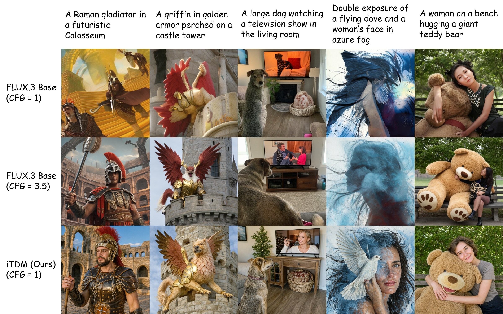
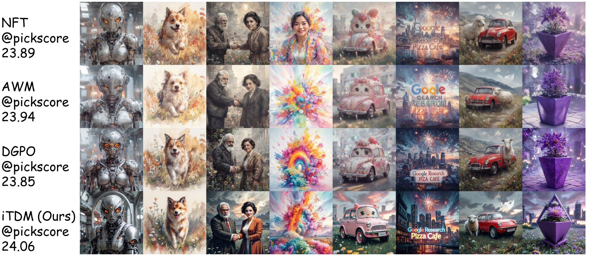
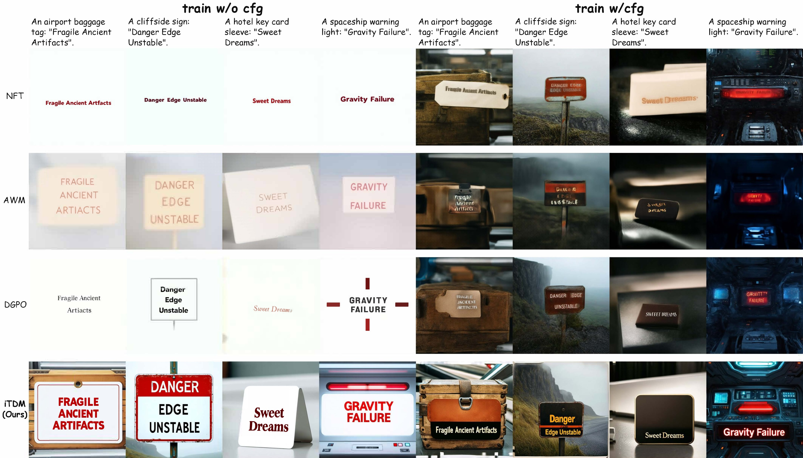
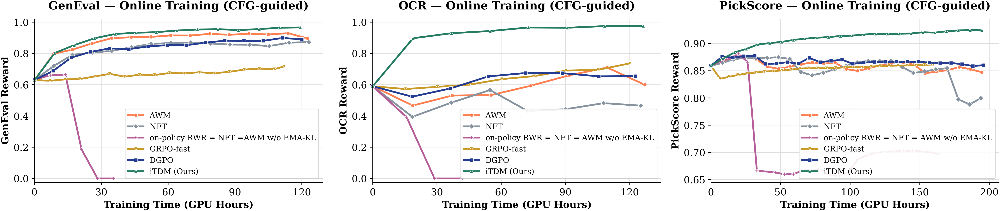
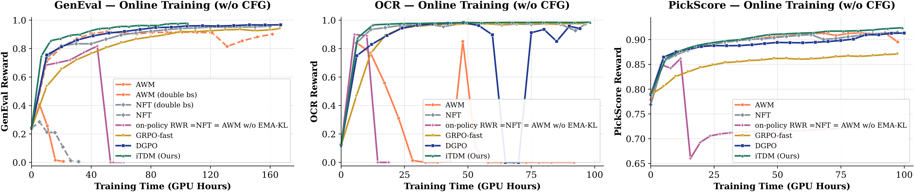
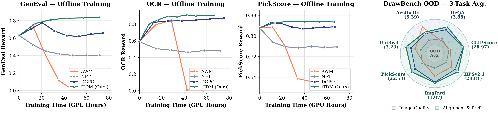
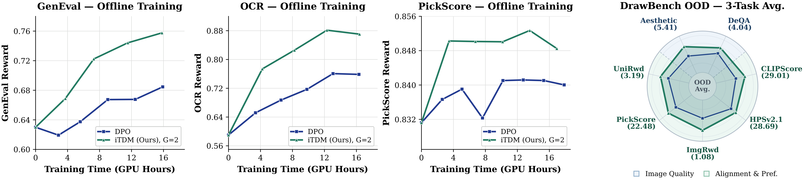

Abstract
Forward diffusion reinforcement learning (RL)—enabling deterministic ODE sampling without trajectory backpropagation—has grown increasingly popular for efficiently aligning diffusion models. However, we reveal that existing methods essentially rely on signed reward-weighted regression (RWR), regressing the trainable policy velocity onto rollouts from a behavior distribution. Unbiased baseline subtraction implicitly assumes that the policy velocity equals the behavior marginal velocity—an idealized assumption violated under classifier-free guidance (CFG) rollouts, offline/off-policy updates, and imperfect online self-consistency. This behavior–policy mismatch breaks baseline invariance and injects baseline-induced gradient drift, destabilizing training.
To resolve this issue, we propose Instantaneous Trajectory Distribution Matching (iTDM), taking the infinitesimal limit of Trajectory Distribution Matching toward a time-local reward-guided target via the posterior-score identity to yield a sample-level gradient anchored at the behavior velocity—without learning an additional reward-tilted target score. Tracking this velocity with a lightweight online auxiliary denoiser guarantees exact baseline invariance at the auxiliary optimum, effectively suppressing baseline drift across both online and offline RL.
Extensive experiments across compositional generation, text rendering, and preference alignment show that iTDM achieves state-of-the-art in-domain and out-of-domain performance across group-wise online/offline RL and pairwise offline RL. Notably, on the challenging GenEval2 benchmark, iTDM converges nearly 3× faster than competing methods while scaling smoothly to 0.87 without collapse. Furthermore, iTDM scales effectively to the 5.6B FLUX.3 model, achieving better performance across both in-domain and unseen metrics.
Scaling Online RL to 5.6B FLUX.3 Klein Base
To evaluate scalability across model architectures, parameter scales, and reward functions, we apply iTDM to the 5.6B-parameter FLUX.3 Klein Base model using the wide-spectrum preference reward HPSv3++ in the guidance-free regime (\(\mathrm{CFG}=1.0\)). Operating at \(1\times\) NFE without classifier-free guidance, iTDM surpasses both the unguided (\(\mathrm{CFG}=1.0\)) and CFG-guided (\(\mathrm{CFG}=3.5\)) base models on in-domain HPSv3++ and across unseen DrawBench quality and preference metrics.
Samples Generated by iTDM on 5.6B FLUX.3 Klein Base (CFG = 1.0)
Click image to enlargeQualitative Comparison: FLUX.3 Klein Base (CFG = 1.0 & 3.5) vs. iTDM (CFG = 1.0)
Click image to enlarge
DrawBench Evaluation on 5.6B FLUX.3 Klein Base
| Model (5.6B FLUX.3 Klein Base) | Task Metric | Unseen Image Quality | Unseen Alignment & Preference (DrawBench) | |||||
|---|---|---|---|---|---|---|---|---|
| HPSv3++ | Aesthetic | DeQA | CLIPScore | HPSv2.1 | ImgRwd | PickScore | UniRwd | |
| FLUX.3 Klein Base (CFG = 1.0) | 1.661 | 5.064 | 3.858 | 23.13 | 20.84 | -0.646 | 20.46 | 2.125 |
| FLUX.3 Klein Base (CFG = 3.5) | 8.518 | 5.308 | 4.273 | 28.28 | 27.14 | 0.730 | 22.33 | 3.263 |
| iTDM (Ours, CFG = 1.0) | 10.922 | 5.442 | 4.464 | 26.18 | 27.70 | 0.828 | 22.17 | 3.379 |
Online reinforcement post-training with HPSv3++ under guidance-free sampling (\(\mathrm{CFG}=1.0\)), evaluated on DrawBench against the pretrained 5.6B FLUX.3 Klein Base at \(\mathrm{CFG}=1.0\) and default guided \(\mathrm{CFG}=3.5\).
Qualitative Comparisons on SD3.5-Medium
Signed RWR pulls the trainable policy toward coarse few-step rollout marginals while drifting under CFG velocity mismatch. By anchoring residuals at the behavior velocity \(v_\phi \approx v_q\) and regularizing solely toward the pretrained reference \(v_{\mathrm{ref}}\), iTDM preserves crisp textures, rich scene context, and accurate typography across both unguided and CFG-guided regimes.
Human Preference Alignment (PickScore, CFG = 1.0)
Click image to enlarge
Visual Text Rendering: Conditional (CFG = 1.0) vs. CFG-Guided (CFG = 4.5) Online RL
Click image to enlarge
Why Forward Diffusion RL Drifts — and How iTDM Fixes It
1. Hidden Fragility of Existing Forward Diffusion RL (Signed RWR)
Along the linear flow-matching path \(\mathbf{x}_t = (1-t)\mathbf{x}_0 + t\epsilon\) with conditional velocity \(v(\mathbf{x}_t \mid \mathbf{x}_0) = \epsilon - \mathbf{x}_0\), rollout sampling induces a behavior distribution \(q_0\) with noisy marginal \(q_t\) and marginal velocity \(v_q(\mathbf{x}, t) = \mathbb{E}[v(\mathbf{x}_t \mid \mathbf{x}_0) \mid \mathbf{x}_t = \mathbf{x}]\). Existing forward diffusion RL methods—including DGPO, DiffusionNFT, and AWM—center rewards with a prompt-level baseline \(b(\mathbf{c})\) into signed advantages \(A = R - b(\mathbf{c})\) and optimize a signed reward-weighted regression (RWR) core evaluated at the trainable policy \(v_\theta\):
Here \(J_\theta = \partial v_\theta(\mathbf{x}_t, t)/\partial \theta\) and \(m_t(\mathbf{x}) = \mathbb{E}[R \mid \mathbf{x}_t = \mathbf{x}]\). Unlike policy gradients in PPO/GRPO, unbiased baseline subtraction in RWR implicitly assumes \(v_\theta = v_q\). Under CFG-guided rollouts, offline/off-policy updates, or imperfect online self-consistency, pervasive mismatch (\(v_\theta \neq v_q\)) triggers two severe side effects:
Baseline-Induced Gradient Drift
Subtracting \(b(\mathbf{c}) > 0\) breaks baseline invariance (\(\nabla_\theta \mathcal{L}_{\mathrm{RWR}}^A - \nabla_\theta \mathcal{L}_{\mathrm{RWR}}^R = -\Delta_t^b\)) and actively pushes \(v_\theta\) away from \(v_q\) during gradient descent. Unanchored on-policy RWR collapses rapidly, while heuristic proximity anchors in NFT and AWM stagnate or diverge under CFG-guided and offline rollouts.
Coarse Rollout-Artifact Fitting
Because \(m_t(\mathbf{x}) \ge 0\), the residual drift \(\Delta_t^q\) pulls \(v_\theta\) toward the behavior marginal \(v_q\). Since online RL uses coarse few-step ODE solvers (~10 steps) for rollout efficiency, \(\Delta_t^q\) forces the policy to fit discretization artifacts—blurring textures and hurting unseen DrawBench quality even at \(\mathrm{CFG}=1.0\).
2. Instantaneous Trajectory Distribution Matching (iTDM)
Instead of forcing policy improvement into signed regression at \(v_\theta\), we apply Trajectory Distribution Matching (TDM) to the local reverse step \(T_\theta(\mathbf{x}) = \mathbf{x} - \delta v_\theta(\mathbf{x}, t)\) against the time-local reward-guided target \(\pi_t^R(\mathbf{x}) \propto q_t(\mathbf{x})\exp(m_t(\mathbf{x}))\), whose score differs from \(s_{q_t}\) purely by the reward-driven score correction \(s_{\pi_t^R}(\mathbf{x}) - s_{q_t}(\mathbf{x}) = \nabla_{\mathbf{x}} m_t(\mathbf{x})\). Taking the step-normalized infinitesimal limit \(\delta \downarrow 0\) and applying the Gaussian posterior-score identity with the tower property yields an exact sample-level RL gradient anchored at \(v_q\)—requiring no reward-tilted score network:
Exact Baseline Invariance
Because \(\mathbb{E}[v_q(\mathbf{x}_t, t) - v(\mathbf{x}_t \mid \mathbf{x}_0) \mid \mathbf{x}_t, \mathbf{c}] = 0\) holds identically, subtracting any prompt baseline \(b(\mathbf{c})\) leaves \(g_t^A = g_t^R\) strictly unchanged—even when \(v_\theta \neq v_q\).
Tracking Behavior Velocity \(v_q\)
A lightweight LoRA adapter \(v_\phi\) minimizes \(\mathcal{L}_{\mathrm{aux}}(\phi) = \mathbb{E}[\|v_\phi(\mathbf{x}_t, t) - v(\mathbf{x}_t \mid \mathbf{x}_0)\|_2^2]\) on re-noised clean rollouts without storing solver trajectories, plugging \(\operatorname{sg}(v_\phi)\) into \(g_t^A\) to eliminate \(-\Delta_t^b\).
Artifact-Free Reference Anchor
Regularizing toward \(v_{\mathrm{ref}}\) yields unique optimal score \(s_t^\star = s_t^{\mathrm{ref}} + \frac{1}{\beta}\nabla_{\mathbf{x}} m_t\), achieving strict improvement \(\beta\operatorname{KL}(q_t \| \pi_t^+) > 0\) independent of \((q_t, v_\theta)\) to naturally unify online and offline RL.
| Unification of Forward Diffusion RL Objectives | |||
|---|---|---|---|
| Method | Residual Anchor | Proximity Anchor \(v_{\mathrm{old}}\) | Baseline Invariant (\(v_\theta \neq v_q\)) |
| DGPO | Policy \(v_\theta\) (group gate) | — | ✗ |
| DiffusionNFT | Policy \(v_\theta\) | Rollout \(v_{\theta^-}\) | ✗ |
| AWM | Policy \(v_\theta\) (IS weight) | EMA \(v_{\theta_{\mathrm{EMA}}}\) | ✗ |
| iTDM (Ours) | Behavior \(v_\phi \approx v_q\) | Not needed (\(v_{\mathrm{ref}}\) only) | ✓ (at \(v_\phi = v_q\)) |
- Sample prompt \(\mathbf{c} \sim \mathcal{D}_c\) and clean ODE rollouts \(\{\mathbf{x}_{0,i}\}_{i=1}^G \sim q_0(\cdot \mid \mathbf{c})\).
- Score rewards \(R_i = r(\mathbf{x}_{0,i}, \mathbf{c})\) and compute clipped centered group advantages \(A_i\).
- Re-noise endpoints: \(\mathbf{x}_{t,i} = (1-t)\mathbf{x}_{0,i} + t\epsilon_i\) with \(t \sim \mu\), \(\epsilon_i \sim \mathcal{N}(\mathbf{0}, \mathbf{I})\).
- Update auxiliary \(\phi\) on \(\|v_\phi(\mathbf{x}_t, t) - v(\mathbf{x}_t \mid \mathbf{x}_0)\|_2^2\).
- Update policy \(\theta\) using \(\widehat{g}_t^A = 2\mathbb{E}[A\,J_\theta^\top(\operatorname{sg}(v_\phi) - v(\mathbf{x}_t \mid \mathbf{x}_0))] + \beta\nabla_\theta \|v_\theta - v_{\mathrm{ref}}\|_2^2\).
Quantitative Results & Training Efficiency
We post-train SD3.5-Medium across Compositional Generation (GenEval), Visual Text Rendering (OCR), and Human Preference Alignment (PickScore), and further scale to the 5.6B FLUX.3 Klein Base model with HPSv3++. To detect reward hacking, every checkpoint is additionally evaluated on seven unseen out-of-domain metrics on DrawBench. Best results in each setting are highlighted in bold.
| Model (CFG = 4.5) | In-Domain Task Metric | Unseen Image Quality | Unseen Alignment & Preference (DrawBench) | |||||||
|---|---|---|---|---|---|---|---|---|---|---|
| GenEval | OCR | PickScore | Aesthetic | DeQA | CLIPScore | HPSv2.1 | ImgRwd | PickScore | UniRwd | |
| SD3.5-M (Pretrained Base) | 0.63 | 0.59 | 21.72 | 5.36 | — | 28.50 | 27.90 | 0.85 | 22.34 | 3.03 |
| Compositional Image Generation (GenEval) | ||||||||||
| AWM | 0.93 | — | — | 5.12 | 3.43 | 28.96 | 24.54 | 0.91 | 22.14 | 3.07 |
| DiffusionNFT | 0.89 | — | — | 4.92 | 2.97 | 28.74 | 22.62 | 0.64 | 21.89 | 2.97 |
| DGPO | 0.90 | — | — | 5.09 | 3.17 | 28.98 | 23.87 | 0.75 | 22.05 | 2.98 |
| iTDM (Ours) | 0.97 | — | — | 5.26 | 4.12 | 29.00 | 28.19 | 0.98 | 22.49 | 3.13 |
| Visual Text Rendering (OCR) | ||||||||||
| AWM | — | 0.75 | — | 5.28 | 3.62 | 28.67 | 24.77 | 0.73 | 22.05 | 2.93 |
| DiffusionNFT | — | 0.70 | — | 5.19 | 3.67 | 28.75 | 25.43 | 0.68 | 22.10 | 2.91 |
| DGPO | — | 0.76 | — | 4.95 | 2.56 | 26.82 | 19.73 | -0.45 | 20.76 | 2.18 |
| iTDM (Ours) | — | 0.96 | — | 5.23 | 3.97 | 28.77 | 27.98 | 0.80 | 22.40 | 3.09 |
| Human Preference Alignment (PickScore) | ||||||||||
| AWM | — | — | 22.80 | 6.02 | 3.99 | 27.73 | 29.78 | 1.18 | 23.23 | 3.27 |
| DiffusionNFT | — | — | 22.75 | 5.96 | 3.86 | 27.50 | 28.72 | 1.14 | 23.14 | 3.25 |
| DGPO | — | — | 22.37 | 5.65 | 3.98 | 28.12 | 28.87 | 1.10 | 22.89 | 3.17 |
| iTDM (Ours) | — | — | 24.08 | 6.11 | 4.12 | 28.35 | 32.73 | 1.46 | 24.26 | 3.52 |
| Model (CFG = 1.0) | In-Domain Task Metric | Unseen Image Quality | Unseen Alignment & Preference (DrawBench) | |||||||
|---|---|---|---|---|---|---|---|---|---|---|
| GenEval | OCR | PickScore | Aesthetic | DeQA | CLIPScore | HPSv2.1 | ImgRwd | PickScore | UniRwd | |
| SD3.5-M (Pretrained Base) | 0.24 | 0.12 | 19.82 | 5.13 | — | 23.70 | 20.40 | -0.58 | 20.51 | 2.02 |
| Compositional Image Generation (GenEval) | ||||||||||
| AWM | 0.92 | — | — | 4.71 | 3.94 | 27.50 | 21.41 | 0.15 | 21.35 | 2.62 |
| DiffusionNFT | 0.96 | — | — | 4.88 | 4.05 | 27.34 | 22.90 | 0.30 | 21.51 | 2.82 |
| DGPO | 0.97 | — | — | 5.15 | 4.06 | 27.64 | 24.03 | 0.71 | 22.04 | 2.96 |
| iTDM (Ours) | 0.98 | — | — | 5.08 | 4.23 | 27.69 | 24.73 | 0.65 | 21.74 | 3.04 |
| Visual Text Rendering (OCR) | ||||||||||
| AWM | — | 0.85 | — | 4.16 | 3.25 | 21.02 | 13.70 | -1.69 | 19.69 | 1.52 |
| DiffusionNFT | — | 0.97 | — | 3.52 | 3.52 | 22.13 | 14.86 | -1.49 | 19.86 | 1.50 |
| DGPO | — | 0.97 | — | 4.19 | 2.13 | 21.36 | 14.16 | -1.70 | 19.69 | 1.53 |
| iTDM (Ours) | — | 0.97 | — | 4.48 | 3.88 | 22.80 | 18.25 | -1.15 | 20.14 | 1.82 |
| Human Preference Alignment (PickScore) | ||||||||||
| AWM | — | — | 23.94 | 6.45 | 3.97 | 26.59 | 29.99 | 1.29 | 23.95 | 3.34 |
| DiffusionNFT | — | — | 23.89 | 6.40 | 3.81 | 26.36 | 29.05 | 1.24 | 23.86 | 3.32 |
| DGPO | — | — | 23.85 | 6.18 | 3.60 | 27.32 | 29.21 | 1.23 | 23.54 | 3.35 |
| iTDM (Ours) | — | — | 24.06 | 6.22 | 4.26 | 26.71 | 31.85 | 1.33 | 24.00 | 3.36 |
| Offline Model (Frozen CFG = 4.5 Rollouts) | In-Domain Task Metric | Unseen Image Quality | Unseen Alignment & Preference (DrawBench) | |||||||
|---|---|---|---|---|---|---|---|---|---|---|
| GenEval | OCR | PickScore | Aesthetic | DeQA | CLIPScore | HPSv2.1 | ImgRwd | PickScore | UniRwd | |
| SD3.5-M (Pretrained Base) | 0.63 | 0.59 | 21.72 | 5.36 | — | 28.50 | 27.90 | 0.85 | 22.34 | 3.03 |
| Compositional Image Generation (Pairwise G = 2 & Group-Wise) | ||||||||||
| Diffusion-DPO (G = 2) | 0.69 | — | — | 5.41 | 4.03 | 28.72 | 28.55 | 0.97 | 22.35 | 3.20 |
| iTDM (Ours, G = 2) | 0.77 | — | — | 5.38 | 4.06 | 29.11 | 28.26 | 1.06 | 22.43 | 3.18 |
| AWM | 0.75 | — | — | 5.36 | 3.72 | 29.10 | 27.66 | 0.93 | 21.49 | 3.14 |
| DiffusionNFT | 0.52 | — | — | 5.33 | 3.76 | 28.30 | 27.13 | 0.72 | 22.00 | 3.00 |
| DGPO | 0.78 | — | — | 5.33 | 3.99 | 29.11 | 28.01 | 1.01 | 22.28 | 3.21 |
| iTDM (Ours) | 0.87 | — | — | 5.32 | 3.82 | 28.93 | 27.98 | 1.03 | 22.38 | 3.23 |
| Visual Text Rendering (Pairwise G = 2 & Group-Wise) | ||||||||||
| Diffusion-DPO (G = 2) | — | 0.78 | — | 5.23 | 3.90 | 29.44 | 27.99 | 0.91 | 22.13 | 3.08 |
| iTDM (Ours, G = 2) | — | 0.87 | — | 5.29 | 3.95 | 29.26 | 27.57 | 1.01 | 22.23 | 3.13 |
| AWM | — | 0.85 | — | 5.34 | 3.48 | 28.92 | 27.64 | 0.90 | 21.82 | 3.01 |
| DiffusionNFT | — | 0.53 | — | 5.21 | 3.52 | 28.33 | 25.97 | 0.62 | 21.74 | 2.95 |
| DGPO | — | 0.87 | — | 5.18 | 3.33 | 29.41 | 26.37 | 0.99 | 21.90 | 2.97 |
| iTDM (Ours) | — | 0.92 | — | 5.22 | 3.68 | 29.27 | 27.69 | 0.95 | 22.27 | 3.12 |
| Human Preference Alignment (Pairwise G = 2 & Group-Wise) | ||||||||||
| Diffusion-DPO (G = 2) | — | — | 21.87 | 5.46 | 4.06 | 28.44 | 28.77 | 0.98 | 22.51 | 3.16 |
| iTDM (Ours, G = 2) | — | — | 22.11 | 5.56 | 4.12 | 28.67 | 30.25 | 1.17 | 22.77 | 3.25 |
| AWM | — | — | 21.71 | 5.67 | 3.73 | 27.02 | 27.55 | 0.83 | 22.20 | 3.09 |
| DiffusionNFT | — | — | 20.17 | 5.29 | 3.74 | 28.23 | 26.69 | 0.65 | 21.96 | 3.02 |
| DGPO | — | — | 22.13 | 5.59 | 4.18 | 28.36 | 30.39 | 1.16 | 22.78 | 3.27 |
| iTDM (Ours) | — | — | 22.26 | 5.62 | 4.15 | 28.71 | 30.75 | 1.24 | 22.94 | 3.34 |
| Model (5.6B FLUX.3 Klein Base) | In-Domain Task Metric | Unseen Image Quality | Unseen Alignment & Preference (DrawBench) | |||||
|---|---|---|---|---|---|---|---|---|
| HPSv3++ | Aesthetic | DeQA | CLIPScore | HPSv2.1 | ImgRwd | PickScore | UniRwd | |
| FLUX.3 Klein Base (CFG = 1.0) | 1.661 | 5.064 | 3.858 | 23.13 | 20.84 | -0.646 | 20.46 | 2.125 |
| FLUX.3 Klein Base (CFG = 3.5) | 8.518 | 5.308 | 4.273 | 28.28 | 27.14 | 0.730 | 22.33 | 3.263 |
| iTDM (Ours, CFG = 1.0) | 10.922 | 5.442 | 4.464 | 26.18 | 27.70 | 0.828 | 22.17 | 3.379 |
SD3.5-Medium methods share identical regularization strength toward the frozen pretrained reference and use 40-step ODE sampling; 5.6B FLUX.3 Klein Base is reinforced with HPSv3++ under guidance-free sampling (CFG = 1.0).
Training Efficiency & Diagnostic Controls




Quick Start
git clone https://github.com/Luo-Yihong/iTDM.git cd iTDM && pip install -e . # Single-node (8 GPUs) online RL on SD3.5-M bash scripts/single_node/sd3_itdm_geneval.sh bash scripts/single_node/sd3_itdm_ocr.sh bash scripts/single_node/sd3_itdm_pickscore.sh # Append --config.sample.guidance_scale=4.5 for CFG RL
BibTeX
@article{luo2026itdm,
title = {Reinforcing Diffusion Models by Instantaneous
Trajectory Distribution Matching},
author = {Luo, Yihong},
journal = {arXiv preprint arXiv:2611.30986},
year = {2026},
url = {https://arxiv.org/abs/2611.30986}
}